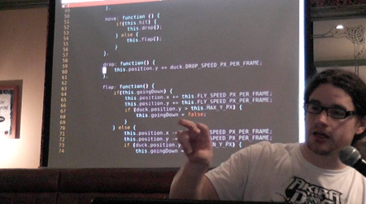

For too long, Cardiff's software development community has been fragmented by language, discipline, and platform.
unified.diff is a monthly meet-up for anybody involved or interested in the field of software development.
We hold tech talks, and trade war stories.
We had a great turnout for the first event. All talks were received very well, massive thanks to the speakers and to everyone who made the trip to attend.

We've got three more great speakers lined up for next month. Same place, Wednesday 7th March. Hope to see you all there!
If you'd like to give a tech talk, or have something you'd like to share at a future event, we'd love to hear from you.
Contact us via Twitter - @unifieddiff